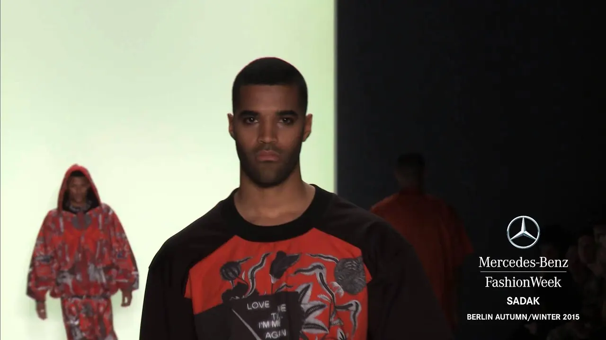
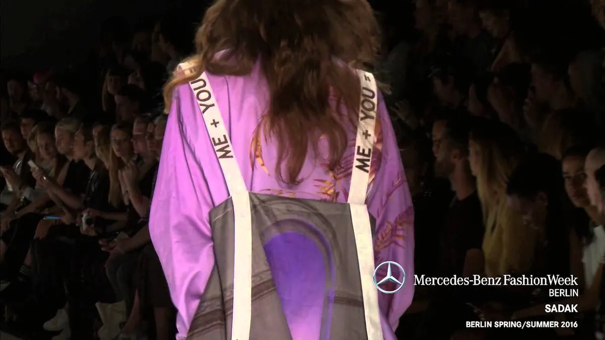
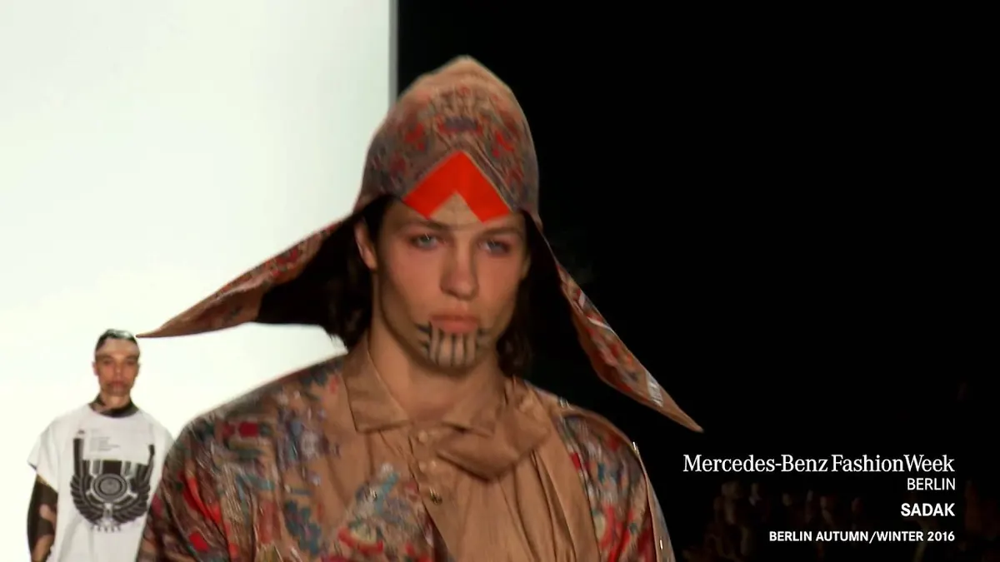
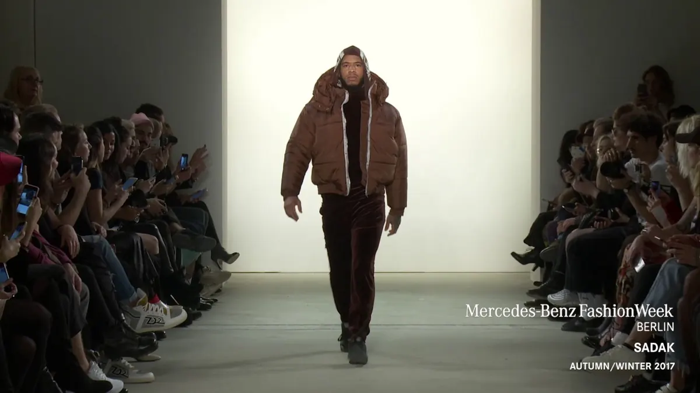

sadak
Four seasons of runway music at Berlin Fashion Week.
- Role
- Runway music
- Place
- Berlin, Germany
- Dates
- FW15 to FW17
- Disciplines
- Music direction, Live show sound, Edit and mix

The brief
I directed the runway music for SADAK at Berlin Fashion Week across four seasons, from FW15 to FW17.
What I did
Runway music
Directed the music for the label's Berlin Fashion Week runway shows.
Four seasons
Returned for each season from FW15 through FW17.
Results
- 4
- seasons
- FW15-FW17
- Berlin Fashion Week


